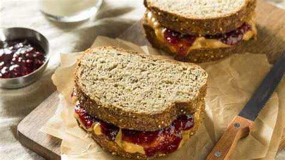

PB&J Sandwich Recipe

Description
This PB&J recipe will show you how to make
a boring old PBJ into a lively and mouthwatering
sandwich. The only appliance you'll need is a toaster!
Ingredients
- 2 slices of your preferred bread
- 3 spoonfuls of peanut butter
- 2 spoonfuls of you preferred jelly
- 1/3 Tsp cinnamon
Steps
- Toast the bread slices until golden brown.
- Onto each slice of bread, sprinkle half of the cinnamon.
- Spread the peanut butter onto one slice.
- Spread the jelly onto the other slice.
- Combine the slice to make a sandwich and enjoy!